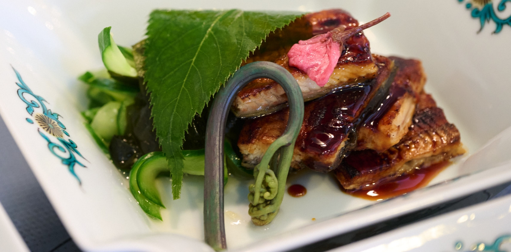
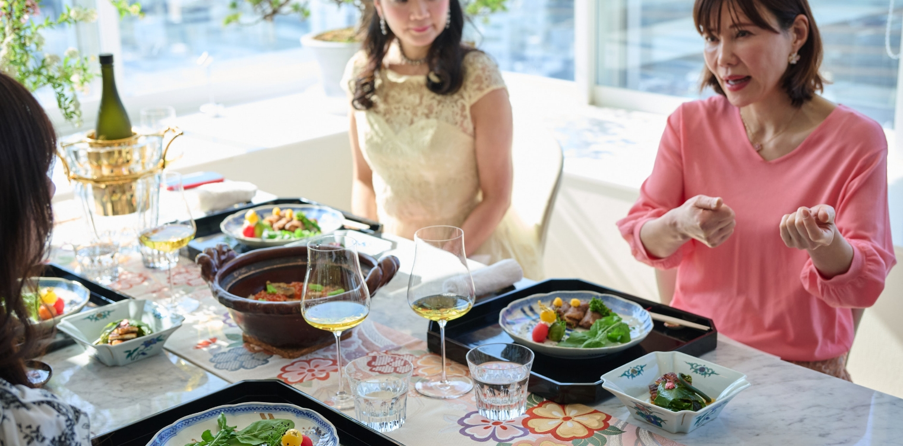

「日本の極み」を使ったホームパーティー
2
うなぎ、きゅうり、わかめの酢の物

お料理の一品めは「うなぎ、きゅうり、わかめの酢の物」から。使っていただいた「江戸前うなぎ蒲焼」は、大井川の清涼な伏流水で2日間餌止めをして臭みをとった活鰻を、熟練職人が丁寧に割き、串打ちをして、特製だれにつけ遠赤外線加熱でじっくり焼きあげた一品。江戸前の流儀にのっとり、背開きで下処理をして、串打ち後はまず白焼きに。それを蒸してからたれづけをして焼いているため、ふっくらとやわらかな食感が魅力です。
「日本の極み」シリーズでも屈指の人気を誇るこちらの商品、内田さんはどのようにアレンジされたのでしょうか。

- 内田みち代 さん
- こちら、パックされていて、電子レンジなりグリルなりで温めるだけでいただけるので、とっても簡単でした！ 試食したら、ふっくらしていて、お味もとてもよくて。
今回は、串は抜いてしまって酢の物と一緒にしています。酢の物はありきたりではあるんですけど、きゅうりとわかめの酢の物。お酢と一緒にお水を入れて、優しい味わいにしています。きゅうりの種を抜くのがポイントです、やっぱり歯触りが気になりますから。
春なので、桜の葉っぱをあしらっておもてなし風にしてみました。
- 松野エリカ さん
- たれが甘すぎなくていいですね！ 市販のって甘すぎちゃって…。
- 内田みち代 さん
- そうなんですよ！
- 内田みち代 さん
- ふっくらしてて、すごいお上品な味。
- 壁谷玲子 さん
- 身がしっかりしてますね！ それに、炭火で焼いたみたいな香ばしさ！
- 酒匂ひろ子 さん
- 酢の物と一緒だと、いっそう食べやすいですね。
- 内田みち代 さん
- （「日本の極み」シリーズの中でも人気の商品と聞いて）
リピートされる方が多いんでしょうか。このお味なら納得です。
作り方を見る
【材料（4人前）】
・「江戸前うなぎ蒲焼」 2串（温める）
・きゅうり 2本（塩ずり）
・わかめ 60g
・生姜 1カケ（千切り）
〈A〉
水 50cc
塩 小1/2
〈B〉
・米酢 60cc
・水 30cc
・濃口醤油 小2
・オーガニックシュガー 大1
〈C〉
桜の葉漬け4 枚
桜の塩漬け4 枚
【作り方】
- きゅうりは洗ってから縦半分に切り種を取り笹打ち切りにし、Aに10 分漬けて絞る。
- わかめは熱湯をかけ氷水で冷やし水気を取る。
- B、1、2、生姜をボールで合わせ、鰻と共に盛り付け、タレをかける。